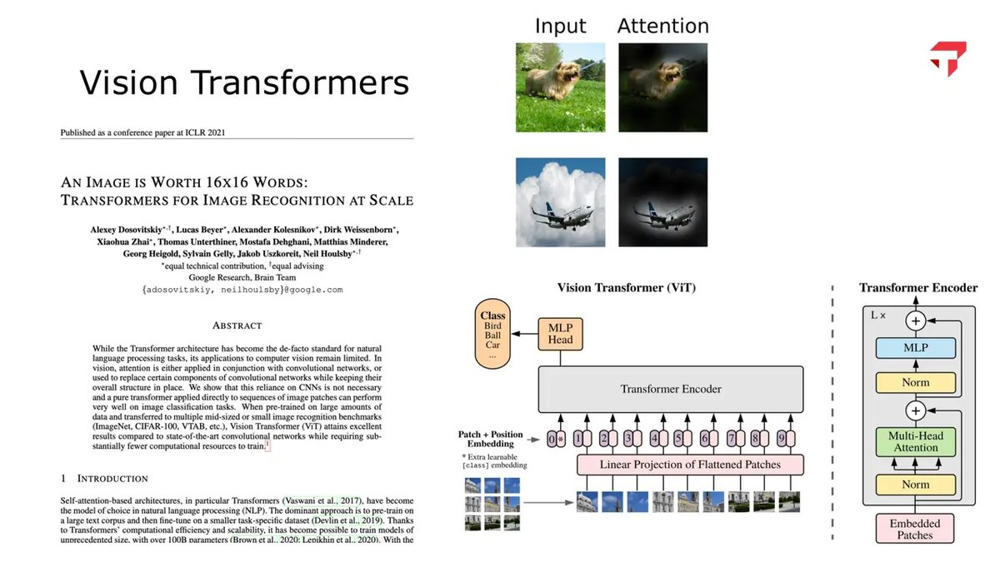
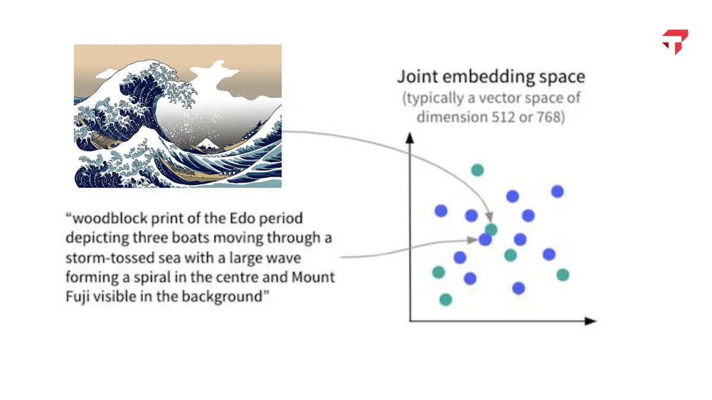
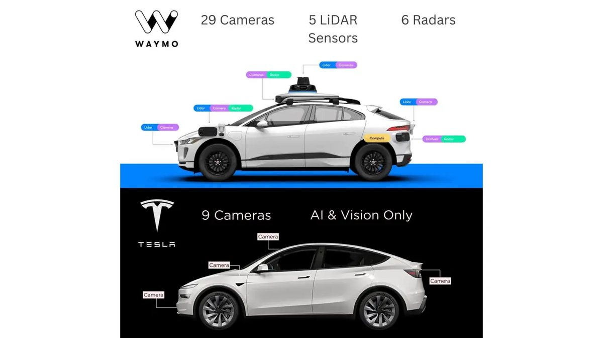
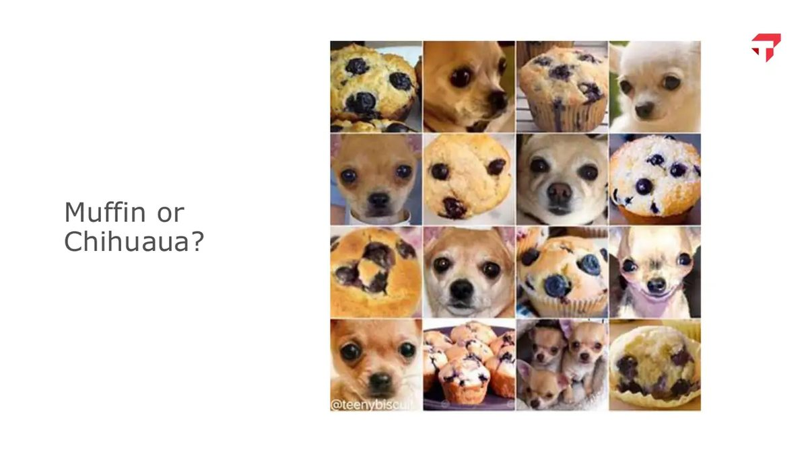
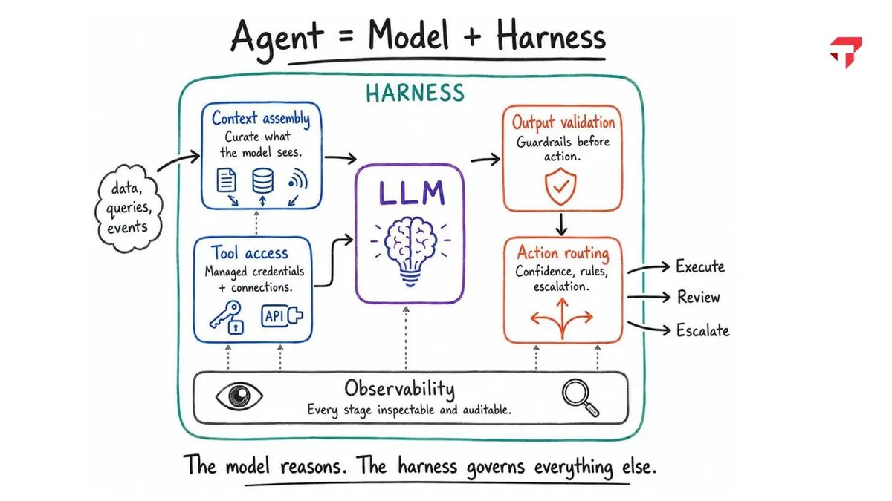

Talks
Talks
Talks and workshops on building AI courses, teaching with AI, and putting analytics to work.
August 7, 2026 · Tepper AI-Exchange · Carnegie Mellon University, Pittsburgh
Lessons Learned from Developing New AI Courses for MBA and Undergraduate Business Students
Over the past year I designed and taught a new MBA elective, AI Methods for Social and Visual Data, and I was developing an undergraduate course, Artificial Intelligence for Business Leaders, launching that fall. In this talk I shared what has worked well in the MBA classroom, from assignment design to helping students build hands-on skills with modern AI tools, along with what I was changing or trying differently in the new undergraduate course. I also gave a brief introduction to a large randomized controlled trial of AI in the classroom that I am taking part in, and what we hope to learn from it about how AI actually affects student outcomes.
The session closed as a discussion with the faculty in the room: what they would add to the undergraduate course, what did not fit, and how Tepper should approach a flagship AI course for undergraduates.
Selected slides











June 5, 2025 · Teaching with AI Summer Workshop · Kellogg School of Management, Northwestern University
AI Data Visualization Coach
A flash talk with my colleague Zoey Jiang on the custom GPT we built for Data Visualization. Before presenting a chart redesign, teams test it with the coach. It will not hand over a redesign. It questions the team from three seats: a journalist, a chart designer, and a business stakeholder.
Selected slides


April 30, 2026 · Tepper School of Business
Faculty Spotlight: what students learn in the MS in Business Analytics
 Faculty Spotlight · 11 min
Faculty Spotlight · 11 min
A conversation for Tepper about the MS in Business Analytics curriculum, and why I describe business analytics as a decathlon.
Before that
Earlier talks
- Sep 2026Business Analytics track information session. Tepper MBA program
- 2025, 2026Perspectives on Analytics. BaseCamp orientation for incoming part-time MS in Business Analytics students, Tepper School of Business
- Nov 2025Managing groups and teams: strategies for collaborative excellence. Community partner workshop, Carnegie Mellon University in Qatar
- Mar 2025Traditional AI: data mining and data visualization, and AI tools for research. Colloquium on AI for Business, Tepper School of Business
- 2024, 2025Using statistics to solve business problems, and to estimate the unknown. Business Analytics Summer Summit, Tepper School of Business
- 2015Creating a culture for innovation in teams. RasGas Company, Doha
- 2014Digital marketing for entrepreneurs. International Telecommunication Union World Conference
- 2014Leadership in groups and organizations. Cultivate Leadership Workshop, Hamad Bin Khalifa University